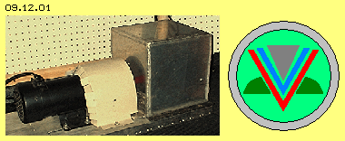
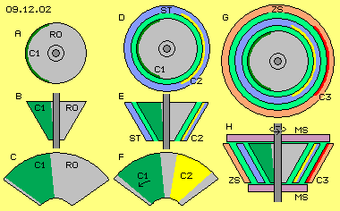
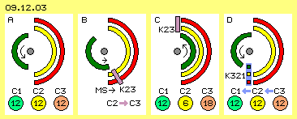
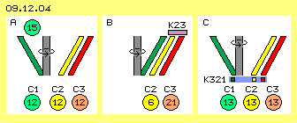
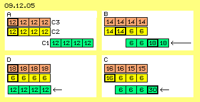
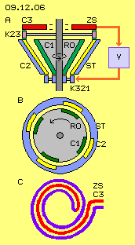
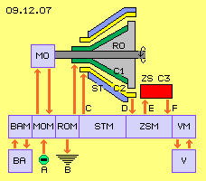

Aufruhr und Desaster
Nashville, Tennessee, USA, 2002: ein gewisser Carl Tilley verursachte mächtigen Wirbel mit den Behauptungen, seine Werkstatt unabhängig von externer Stromversorgung zu betreiben und Fahrzeuge mit Elektro-Antrieb bewegen und zugleich deren Batterien aufladen zu können. Er wollte sogar Schiffe und Flugzeuge vorführen zum Beweis einer autonomen Energie-Versorgung. Weil damit alle Energie-Probleme dieser Welt erledigt wären, forderte er ´nur´ eine Milliarde Dollar für seine Erfindung. Es kamen viele Leute und wollten die realen Maschinen sehen und testen. Wie üblich gab es ´Vorführ-Effekte´ und kaum verlässliche Mess-Ergebnisse. Dennoch gaben Investoren viel Geld für die weitere Entwicklung ... Versprechungen, Verzögerungen, Anklagen, Untersuchungen, Verfolgung, Verleugnung, Gefängnis, Konkurs ... das übliche Prozedere (besonders in den USA).

Im Internet sind viele Details beschrieben. Dennoch bleibt praktisch alles um diese Tilley-Story im Ungewissen. Vorweg sollte man aber jedem Erfinder zugute halten, dass er einen Effekt erkannt hat und in diesem Fall auch real abbilden konnte. In aller Regel werden verbliebene Probleme nicht erkannt oder nicht beachtet (und ich selbst kenne diesen ´Selbst-Betrug´ zur Genüge). Solange man die wahre Ursache des Effektes nicht kennt, kann in aller Regel auch keine Optimierung erreicht werden. Das gilt besonders für diese ´immateriellen und mysteriösen Phänomene´ der Elektrizität. Solange ein Erfinder kein voll taugliches System vorführen kann, glaubt ihm keiner. Oftmals geraten Erfinder dann in finanzielle Probleme und ein - an sich aussichtsreicher - Ansatz mündet im riesigen Abfallhaufen untauglicher Erfindungen.
Spinner
Bei Tilley ist das Geheimnis konzentriert in einer kleinen ´Blackbox´. Links in Bild 09.12.01 ist ein Motor (schwarz) zu sehen und daneben eine (hell abgedeckte) Kupplung. Die Welle führt in einen grauen Würfel von etwa 20 cm Kantenlänge. Im Innern wird es also ein drehendes Element geben und darum wird dieser Kasten als ´Spinner´ bezeichnet. In diesen hinein bzw. heraus führen zwei Kabel. Das ist eigentlich alles was man weiß.
Vermutlich darf man Carl Tilley glauben, dass in seinem System "kein Back-EMF auftritt, keine Skalare und Magnete und Pulse und Wellen jeder Art verwendet werden, nicht mit Resonanzen gearbeitet wird und es keine Frequenzen über der Drehzahl des Gleichstrom-Motors gibt und ebenso keine ´high-voltage´ Elektrostatik." Damit ist so ziemlich alles ausgeschlossen - außer vielleicht Elektrostatik im Bereich relativ geringer Spannung? Vermutlich darf man Carl Tilley auch glauben, dass im Logo seiner Firma das Wesentliche dargestellt sei. Aus der Erinnerung heraus (seine originale Website ist nicht mehr verfügbar) habe ich dieses Emblem in Bild 09.12.01 rechts gezeichnet: drei V-förmige Elemente ineinander gesteckt (hier farblich differenziert). Aus diesen Aussagen versuche ich im folgenden eine Lösung des Problems zu entwickeln.
Kegel

Ein rotierender Kegel (-Stumpf) hat die gleichen Vorteile wie eine flache Scheibe: an zunehmend längerem Radius bewegt sich die Oberfläche zunehmend schneller im Raum. Am Mantel eines Kegels können zudem die Elemente länger gestreckt sein als auf einer Kreisfläche. In Bild 09.12.02 ist oben bei A eine Sicht auf die große Seitenfläche dieses Kegel-Rotors (RO, grau) dargestellt. Bei B ist eine Seitenansicht skizziert und bei C eine Abwicklung des Mantels.
Wie bei den Maschinen der vorigen Kapitel soll der Rotor vorwiegend aus nicht-leitendem Material bestehen. Andererseits soll er eine Fläche aus leitendem Material aufweisen, die beim Start aufgeladen wird. Hier wird die Rotor-Ladungsfläche C1 bezeichnet. Dieser grüne Bereich bedeckt im einfachsten Fall etwas weniger als die halbe Mantelfläche.
In der mittleren Spalte des Bildes bei D und E ist um diesen Rotor-Kegel (grau) eine kegelförmige Schale angelegt. Dieser Stator (ST) besteht ebenfalls aus nicht-leitendem Material (blau) mit Ausnahme einer Sektion aus leitendem Material (gelb). Auch diese Fläche C2 wird beim Starten des Systems aufgeladen. Unten bei F ist noch einmal die Mantelabwicklung des Rotors eingezeichnet mit seiner Ladungsfläche C1. Dieser gegenüber befindet sich die stationäre Ladungsfläche C2. Sie ist etwas schmaler, damit sie phasenweise komplett abgedeckt wird durch die rotierende Ladungsfläche C1.
Rechts in diesem Bild bei G und H ist um vorige Elemente noch einmal eine kegelförmige Schale eingezeichnet. Auch dieser Zwischenspeicher (ZS) besteht aus nicht-leitendem Material (hell-rot) mit Ausnahme einer Sektion aus leitendem Material (dunkel-rot). Auch diese Fläche C3 wird beim Start des Systems aufgeladen. Alle drei Flächen (C1, C2 und C3) zur Aufnahme elektrischer Ladung sind (in etwa) gleich groß. In diesem Bild unten rechts bei H sind auf der Welle (dunkelgrau) zwei Scheiben (pink) fest montiert, die zur mechanischen Steuerung (MS) des Systems dienen.
Ladungs-Verschiebung

In Bild 09.12.03 sind nur diese Ladungsflächen schematisch im Querschnitt skizziert. Jede Fläche ist etwas weniger als einen Halbkreis lang. Die Ladungsfläche des Rotors (C1, grün) dreht um die Systemachse. Die Ladungsfläche des Stators (C2, gelb) ist ortsfest und auch die Ladungsfläche des Zwischenspeichers (C3, rot) ist ein stationäres Bauelement. Links bei A ist die Situation beim Start dargestellt. Alle Flächen sind aufgeladen, beispielsweise auf jeweils 12 V (gegenüber der Normal-Ladung der Erde).
Bei B hat sich die Rotor-Ladungsfläche so weit gedreht, dass sie die Stator-Ladungsfläche zu bedecken beginnt. Zusammen mit dem Rotor dreht auch die obere Scheibe der mechanischen Steuerung (MS, pink). Dabei bildet ein Schleifkontakt (K23, pink) eine leitende Verbindung zwischen C2 und C3, so dass die verdrängte Stator-Ladung auf die Ladungsfläche des Zwischenspeichers fließen kann.
Bei C deckt die Rotor-Fläche (grün) die Stator-Fläche (gelb) vollständig ab. Der Schleifkontakt befindet sich nun außerhalb von den stationären Flächen, so dass dort keine Verbindung mehr besteht. Die Stator-Fläche wurde ´leer-gedrückt´ und weist nurmehr eine Ladungs-Stärke z.B. von 6 V auf. Im Zwischenspeicher ist die Ladungs-Dichte entsprechend auf 18 V angestiegen.
Etwa eine halbe Umdrehung lang bleiben die Ladungen getrennt, bis sich die Rotor-Fläche komplett von der Stator-Fläche weg gedreht hat, wie bei D skizziert ist. Auch die untere Scheibe der mechanischen Steuerung dreht sich mit dem Rotor. In dieser Situation wird durch einen Schleifkontakt (K321, hell-blau) für einen kurzen Moment eine leitende Verbindung zwischen allen drei Flächen hergestellt. Die zuvor differenzierten Ladungen gleichen sich an, d.h. alle weisen wieder 12 V Spannung auf, so dass der Prozess wiederholt werden kann.
Unterschiedliche Ladungs-Schichten

Insofern ist dieser Ablauf ein ´Null-Summen-Spiel´ und es ergibt sich die Frage, wie eine Nutzen-Mehrung entstehen könnte. In Bild 09.12.04 sind die Positionen der kegelförmigen Ladungsflächen im Längsschnitt gezeichnet. Bei A befindet sich die Rotor-Ladungsfläche (C1, grün) links und die beiden stationären Flächen (C2 und C3, gelb und rot) rechts. Alle Flächen tragen eine Ladung von z.B. 12 V. Wie in vorigen Kapiteln ausgeführt wurde, addiert sich die Äther-Bewegung aus der Drehung des Rotors zum Äther-Schwingen der Ladung. Die Ladungsfläche am langen Radius des Kegelstumpfes bewegt sich schneller im Raum, daher wird dort die Intensität des Ladungs-Schwingens stärker sein, z.B. einer Spannung von 15 V entsprechen.
Bei B hat sich der Rotor um 180 Grad gedreht, so dass nun seine Ladungsfläche die Stator-Fläche abdeckt. Deren Ladungs-Schicht (C2, gelb) wird komprimiert und entspricht nurmehr 6 V. Im oberen Bereich wird die erhöhte Spannung der Rotor-Ladung nochmals stärkeren Druck ausüben bzw. die Ladung entsprechend stark ´aufwirbeln´. Die Spannung des Zwischenspeichers (C3, rot) wird dann nicht mehr nur 18 V, sondern zusätzliche 3 V, insgesamt also 21 V aufweisen.
Rechts bei C hat sich der Rotor weiter gedreht und über den Schleifkontakt K321 werden die Ladungen aus allen drei Flächen ausgeglichen - die nun jeweils 13 V Spannung (zur Erde) aufweisen. Es ist also durchaus möglich, dass dieses System selbsttätig die Intensität seines Ladungsschwingens steigert, also Spannung von zunehmender Stärke aufweist. Das normale Schwingen der Ladung wird ´aufgeladen´ durch die schlagende Komponente des Äthers, die sich aus der fortgesetzten Drehung des Rotors ergibt (siehe vorige Kapitel).
Wechselnder Ladungs-Druck

Dennoch bleibt die Frage offen, warum eine Ladung von 12 V (oder auch 15 V) eine Spannung von 21 V sollte auftürmen können. In Bild 09.12.05 wird dieser Aspekt durch ein theoretisches Zahlenbeispiel verdeutlicht. Alle drei Flächen sind hierzu jeweils in vier Abschnitte unterteilt. Jeder Abschnitt trägt anfangs eine Ladung entsprechend einer Spannung von 12 V. Bei A befindet sich die Rotor-Ladungsfläche (C1, grün) rechts von den stationären Ladungsflächen (C2 und C3, gelb und rot).
Rechts bei B hat sich die Rotor-Ladungsfläche um zwei Abschnitte nach links bewegt. Die Ladungen haben sich dort gegenseitig auf ein Niveau von jeweils 6 V zusammen gedrückt. Beim Rotor verteilt sich die ´überschüssige´ Ladung auf die restlichen zwei Abschnitte, wo nun eine Spannung von jeweils 18 V aufgetürmt ist. Bei den stationären Flächen kann sich die verdrängte Ladung auf die restlichen sechs Abschnitte verteilen, so dass dort jeweils eine Spannung von 14 V momentan gegeben ist. Wenn die Rotor-Fläche weiter nach links wandert, stehen dessen 18 V diesen 14 V des nächsten stationären Abschnitts gegenüber.
Rechts unten bei C sind jeweils drei Abschnitte überdeckt. Von den ursprünglich 4*12 V = 48 V der Rotor-Fläche befindet sich nun 3*6 V in den ersten drei Abschnitten und im letzten Abschnitt steigt die Spannung auf 30 V. Auf den stationären Flächen kann sich die verdrängte Ladung auf mehr Abschnitte verteilen, so dass dort die Ladungs-Stärke jeweils 15 V bis 16 V beträgt. Dieser 16-V-Spannung im linken Stator-Abschnitt steht also die 30-V-Spannung im rechten Rotor-Abschnitt gegenüber.
Unten links in Bild 09.12.05 bei D ist die Abdeckung vollständig - und es existiert ´Stress´ im Äther zwischen C1 und C2. Auf der Rotor-Fläche wird sich die Ladung wieder gleichmäßig verteilen (je Abschnitt jeweils 12 V). Vermutlich wird die Ladung auf den Stator-Flächen noch weiter zusammen gedrückt als auf das Niveau von 6 V. Im Zwischenspeicher C3 wird auf jedem Abschnitt also eine Ladungsschicht von mindestens 18 V existieren. Um vorigen Stress zu vermeiden, müsste die Rotor-Fläche etwas größer sein. Die ´überhöhte´ Spannung wird dann im Randbereich konzentriert sein.
Die Ladung der Stator-Fläche wird also mindestens zur Hälfte auf die Fläche des Zwischenspeichers hinüber gedrückt, so dass nun eine Spannungs-Differenz von 18 - 6 = 12 V existiert. Dieses Gefälle ergibt einen Strom-Impuls, wenn beide stationären Flächen kurz-geschaltet werden (in der nächsten Phase, z.B. per obigem Kontakt K321). Diese Differenz entspricht der Ladungs-Stärke des Rotors. Diese bleibt letztlich unverändert und dient nur zwischenzeitlich dazu, die Ladung auf dem Stator um 6 V ´flacher´ zu drücken und zugleich die Ladung auf dem Zwischenspeicher um 6 V höher zu treiben.
Diese Verschiebung wird also möglich, weil die verdrängte Ladung auf dem Rotor nicht ´ausweichen´ kann, während sie sich im Zwischenspeicher auf größere Flächen verteilen kann.
Ladungs-Speicher und -Fluss

In Bild 09.12.06 ist diese Konzeption noch einmal dargestellt, oben bei A im Längsschnitt und darunter bei B im Querschnitt. Aus Gründen der Symmetrie sollten mindestens jeweils zwei Ladungsflächen auf dem Rotor und Stator angeordnet sein, hier sind z.B. jeweils vier eingezeichnet (C1 und C2, grün und gelb). Der Luftspalt zwischen C1 und C2 sollte etwas enger sein unten am kurzen Radius, damit oben am langen Radius die Ladung vom Stator zum Zwischenspeicher hinüber gedrückt wird.
Der Zwischenspeicher muss nicht unbedingt eine V-förmige Kegelschale sein. Hier ist der Zwischenspeicher (ZS bzw. C3, rot) z.B. als Ring oberhalb des Rotor- und Stator-Kegels angelegt. Die Scheibe der mechanischen Steuerung (hell-grau) dreht mit der Welle bzw. dem Rotor. Solange Ladung von den Stator-Flächen verdrängt wird, stellt der Kontakt K23 eine leitende Verbindung her, über welche verdrängte Ladungsanteile zum Zwischenspeicher gedrückt werden.
Sobald sich die Rotor-Flächen von den Stator-Flächen weg gedreht haben, wird unten ein leitender Kontakt zwischen C3 und C2 hergestellt. Die Spannungs-Differenz ergibt einen Strom-Impuls (im hell-roten Leiter), der in einem Verbraucher (V, hell-blau) zu nutzen ist. Kurz danach kann auch ein Kontakt zu C1 den Ausgleich zwischen allen drei Flächen herstellen. Hier sind diese Kontakte vereinfacht als K321 (hell-blau) gezeichnet. In jedem Fall sollte diese Rück-Speisung am engen Kegel-Radius erfolgen, weil oben am weiten Radius die Ladungen stärker aufgewirbelt sind.
Im eingangs erwähnten Statement hat Carl Tilley viele Elemente ausgeschlossen - aber nicht den Einsatz von Spulen. Möglicherweise könnte man den grünen Ring in seinem Logo (Bild 09.12.01 rechts) als eine Spule auslegen. In diesem Bild unten bei C ist eine bi-filar gewickelte Spule skizziert - die alternativ als Zwischenspeicher dienen könnte. Solche Spulen können relativ viel Ladung mit geringem Widerstand entgegen nehmen. Ebenso effektiv kann der allgemeine Ätherdruck die Ladung wieder hinaus drücken in Form eines Strom-Impulses. Die V-Form des Zwischenspeichers ist aufwändig, genauso wirkungsvoll könnte diese Bifilar-Spule oder ein massiver Ring, eine Kugel oder auch ein Kondensator mit variabler Speicher-Kapazität sein (Kondensatoren, Spulen, Induktion usw. werden in folgenden Kapiteln ausführlich diskutiert).
Bauelemente
In Bild 09.12.07 sind schematisch vorige Bauelemente und generelle Funktionen dargestellt. Nach obigen Überlegungen enthält die ´Tilley-Blackbox´ einen kegelförmigen Rotor (RO, grau). Etwa die Hälfte seiner Mantelfläche besteht aus leitendem Material (C1, grün) zur Aufnahme von Ladung, die in mehrere Sektoren unterteilt sein wird. Der Rotor ist umgeben von einem Stator (ST, dunkel-blau), der etwas schmalere Ladungsflächen (C2, gelb) aufweist. Diese sollten an beiden Enden durch eine Ring-Leitung verbunden sein. Ein Zwischenspeicher (ZS, dunkel-rot) kann in unterschiedlicher Ausführung gebaut sein. Seine Ladungsfläche (C3) sollte eine Kapazität entsprechend zu den Stator-Flächen aufweisen (oder auch variable Kapazität).
Der Rotor muss angetrieben werden durch einen Motor (MO, hell-blau).
Der Motor könnte größer gebaut sein als eigentlich erforderlich bzw. zusätzliche Masse als ´Schwungrad´ aufweisen, um eine intensive Äther-Aura zu bilden. Es könnten auch Permanent-Magnete eingefügt sein, die lediglich zur stärkeren Verwirbelung der Aura dienen. Generell sollten die Magnetfelder des Motors axial ausgerichtet sein. Dann ergibt sich eine ´schlagende Komponente´ in der umgebenden Aura, die mittelbar ein intensiveres Schwingen der Ladung ergibt.
Der Motor könnte mit konstanter oder variabler Drehzahl gefahren werden. Je nach Anzahl der Ladungs-Segmente ergibt sich die Frequenz der generierten Strom-Impulse. Bei fünf Segmenten und z.B. 1200 Umdrehungen je Minute ergeben sich hundert Impulse je Sekunde. Dieser einfache Rotor könnte aber auch mit 24000 Umdrehungen je Minute gefahren werden und gepulsten Gleichstrom mit einer Frequenz von 2000 Hz liefern. Selbst wenn je Phase nur geringe Ladungsmengen bewegt werden, ergibt sich eine Leistung in brauchbarer Größenordnung. Im Zusammenhang mit solchen Maschinen wird meist ein COP (Wirkungsgrad) von 3:1 genannt, wobei hier ein Drittel der generierten Leistung für den Antrieb aufzuwenden wäre. Weil hier keine elektromagnetischen Prozesse eingesetzt werden, treten keine Rückhalte-Kräfte auf. Nur die weit geringeren ´Coulomb-Kräfte´ sind bei diesen Ladungs-Verschiebungen zu überwinden.

Beim Drehen des Rotors werden unterschiedlich starke Ladungs-Schichten gebildet, also Spannung aufgebaut entsprechend zur Drehgeschwindigkeit. Anschließend wird die Spannungs-Differenz abgebaut, indem der allgemeine Ätherdruck - mit Lichtgeschwindigkeit - die überhöhte Ladungsschicht zusammen drückt und als Strom-Impuls über die Leitung schickt. In diesem Bild sind die generellen Wege (hell-rot) des Strom-Flusses eingezeichnet. Weitere Bauelemente (hell-blau) sind schematisch aufgezeigt, z.B. Verbraucher (V) und Batterien (BA) sowie eine Steuereinheit mit diversen Funktionen. Die bei Carl Tilley verwendeten Bauelemente sind im Internet z.B. von Jerry Decker im KeelyNet detailliert aufgelistet und beschrieben. Ich möchte mich hier auf die verbale Beschreibung erforderlicher Funktionen beschränken.
Steuer-Funktionen
Tilley setzte acht oder zwölf 12-V-Batterien ein, so dass Komponenten mit 72 V bis 144 V Gleich- oder Wechselstrom arbeiten konnten. Das System bezieht Strom aus den Batterien (BA) und speist andererseits überschüssigen Strom zurück. Dazu müssen geeignete Bauelemente eines Batterie-Managements (BAM) eingesetzt werden. In der Startphase bzw. im Testbetrieb könnten natürlich auch externe Strom-Quellen (A) verwendet werden. Zur Steuerung des Motors muss ein entsprechendes Motor-Management (MOM) vorhanden sein.
Oben wurde eine mechanische Steuerung mit Schleifkontakten beschrieben. Deren Funktion sind auch durch elektronische Steuerelemente zu realisieren. Wie oben angesprochen wurde, könnten sich hohe Ladung und Spannung in diesem System auch autonom aufbauen. Auf jeden Fall muss also ein Schalter installiert sein, um die Rotor-Ladung notfalls in die Erde (B) abfließen zu lassen. Es wird zweckdienlich sein, die Ladung des Rotors durch ein separates Rotor-Management (ROM) zu kontrollieren. Alle Segmente der Rotor-Ladungsflächen können in einem Ring zusammen gefasst sein - und dort wird tatsächlich ein Schleifkontakt erforderlich sein. Die eingespeiste Rotor-Ladungsstärke bestimmt die maximal erreichbare Spannung zwischen Stator und Zwischenspeicher. Anstelle obiger Zahlenbeispiele kann auch mit 72 V oder 144 V oder höherer Spannung gearbeitet werden.
Die Ladung der Rotor-Flächen sollte immer etwas stärker sein als an den Stator-Flächen. Durch die Stator-Ladung ergibt sich die maximal zu verdrängende Ladungsmenge, wird also die erzielte Strom-Stärke bestimmt. Ladung darf nicht ´rückwärts´ heraus gedrückt werden, weder am Rotor noch am Stator. Generell muss also auf den hier skizzierten Strom-Wegen die gewünschte Strom-Richtung durch geeignete Bauelemente gewährleistet sein. Zudem muss das Stator-Management (STM) den Rück-Lade-Fluss (C) zum richtigen Zeitpunkt frei schalten. In der Testphase oder bei Betrieb mit variabler Ladungsstärke müsste der Luftspalt zwischen Rotor und Stator regulierbar sein, z.B. durch axiales Verschieben des Stators.
Das Management des Zwischenspeichers (ZSM) umfasst mehrer Funktionen. Bei der Verbindung vom Stator zum Zwischenspeicher (Wege D und E) muss gewährleistet sein, dass die Ladung nur in diese Richtung fließen kann. Dort muss das ´Zurück-Schwappen´ also durch einen Gleichrichter verhindert sein. Andererseits muss der Abfluss (F) aus dem Zwischenspeicher zu einem exakten Zeitpunkt frei geschaltet werden: genau wenn die Rotor-Ladungsflächen die Stator-Ladungsflächen passiert haben, weil nur dann die Stator-Flächen wieder aufnahmefähig sind. Dieser Strom könnte z.B. durch die Primärspule eines Trafos, also möglichst direkt über den Weg C zurück in den Stator fließen. Danach sind sofort die Wege C und F zu unterbrechen, um ein erneutes Aufladen des Zwischenspeichers zu ermöglichen.
In dieser Komponente ist generell der eintreffende Strom-Impuls so aufzubereiten, wie es für die Strom-Versorgung der anderen Komponenten notwendig ist. Wenn externe Verbraucher z.B. mit unterschiedlichen Frequenzen, Spannungen, Stärken oder zeitlich wechselndem Bedarf zu betreiben sind, sollte der Strom in einer separaten Komponente des Verbraucher-Managements (VM) aufbereitet werden.
Bauen
Diese Maschine basiert auf einem einfachen Prinzip - und erfordert dennoch eine relativ aufwändige Steuerung. Der Spinner besteht im Wesentlichen nur aus diesem Rotor und entsprechendem Stator - und Carl Tilley sagte, man könne das Material im Baumarkt für 25 $ kaufen. Das sind relativ einfache Bauformen, die dennoch mechanisch exakt zu produzieren sind, besonders für hohe Drehzahlen. Mir war wichtig, eine logisch einleuchtende Erklärung für den Inhalt dieser ´Blackbox´ zu liefern - unter Ausschluss jeglicher Haftung. Natürlich kann ich mit meinen Vermutungen und Überlegungen daneben liegen - aber zumindest ist im Internet keine bessere Variante zu finden. Man kann dieses System in einzelnen Schritten aufbauen, beginnend mit dem Notschalter und auf eigene Verantwortung. Es wird sich bald zeigen, ob und wie viel Rück-Lade-Strom zustande kommt.
Die im Web verfügbaren Bilder zeigen einerseits diesen kleinen Spinner - und drum herum hat Carl Tilley offensichtlich eine ziemlich chaotische Ansammlung elektronischer Bauelemente zusammen ´gebastelt´. Viele Elektro- und Elektronik-Bastler haben ausreichende Kenntnisse, um diese nachvollziehen und nachbauen zu können. Ich hoffe nun sehr, dass sich viele Hobby-Bastler davon selbst überzeugen wollen, dass dieses Ding tatsächlich funktioniert. Natürlich wäre diese Alternative auch für professionelle Hersteller von Generatoren höchst interessant. Dazu ist allerdings die geistige Freiheit erforderlich, einen Wirkungsgrad > 1 realisieren zu wollen - was eigentlich die einzig sinnvolle Zielsetzung ist.
Zur Erinnerung: jede Wärme-Pumpe ist eine Mehr-Nutzen-Maschine - wobei die Umgebungswärme den kostenlosen Beitrag leistet. Jede Tragfläche ist eine Mehr-Nutzen-Maschine, weil mit geringer Vortriebskraft eine Druck-Senke in der Luft erzeugt wird - und der normale atmosphärische Druck die wesentlich stärkere Auftriebskraft kostenlos liefert. Hier wird durch die Verschiebung von Ladung mit geringem mechanischen Aufwand eine Senke und eine Quelle in Form der Spannungs-Differenz erzeugt - und der generelle Ätherdruck produziert kostenlos den Strom-Impuls, der z.B. durch elektromagnetische Prozesse nutzbar wird.